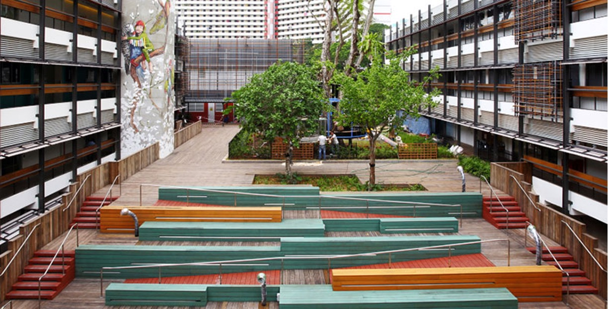
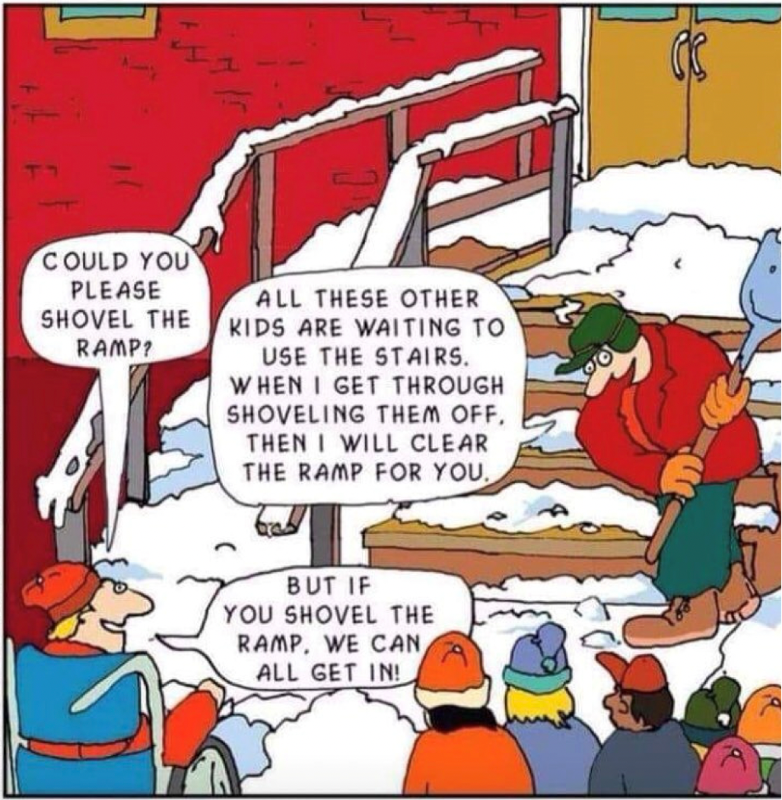
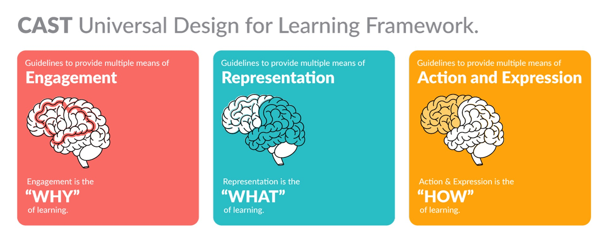

Preface — Shared Language
Presenter-led
Aspect Hunter School — Monday 20 April 2026
Welcome. Grab a seat and something to write with.
We begin at 10:00.
/// The Universal Sandpit
Preface — Shared Language
Presenter-led
Act 1 — The Mirror
Individual → Whole Room
Act 2 — The Analysis
Table Teams
Act 3 — The Rebuild
Hackathon with Constraints
Act 4 — The Confrontation
Whole Room
Act 5 — Commit + Close
Individual → Room
Two frameworks
Structured Teaching
"When the structure does the communicating."
The environment answers the questions before the student has to ask them.
Structured Teaching — four elements
01
Physical structure
02
Schedules
03
Work systems
04
Task organisation
Two frameworks
Universal Design for Learning
There is no average student.
Every learner is a range.
Design to the edges.

Universal design in the built environment — multiple access routes built in from the start, not added as afterthoughts


Structured Teaching
Knowledge-dependent.
The better you know the student, the better the structure you build for them.
Universal Design for Learning
Uncertainty-tolerant.
It builds in options to catch what you didn't anticipate — including paths you didn't design for.
| STRUCTURED TEACHING | UNIVERSAL DESIGN FOR LEARNING | |
|---|---|---|
| Origin | Autism-specific | Mainstream education |
| Starting Point | The individual student's profile | The range of learners in a group |
| Primary Tool | The environment and its physical/visual predictability | The design of the learning experience itself |
| View of Flexibility | Consistency and predictability is the support | Flexibility and choice is the support |
| Relationship to Routine | Routine reduces cognitive load | Routine can become a barrier |
Universal Design for Learning is a design philosophy for human variability.
Both frameworks say: when it isn't working, change the environment — not the child.
The Mirror
10:15 – 10:45 · 30 minutes · Individual → Whole Room
Today's Design Object
Science — Biological Sciences
Living and Non-Living Things
Students distinguish between living and non-living things — sorting examples, identifying what makes something alive, and explaining their reasoning in whatever way best demonstrates their understanding.
Universal Design for Learning
Principle 1
Engagement
"Why should I care about this learning?"
Principle 2
Representation
"How can I access and understand this?"
Principle 3
Expression
"How can I show what I know?"
Table Discussion — Act 1
The Analysis
10:45 – 11:25 · 40 minutes · Table Teams
/// The Students
Malcolm
Age 6
Communicates via AAC and PECS. Responds well to photographs of real objects. Fine motor tasks are difficult without significant support.
Sally
Age 9
Works independently when expectations are clear. Prefers hands-on, tactile experiences. Becomes anxious when task demands are ambiguous.
Priya
Age 13
Prefers to receive information through listening. Strong science interest, particularly space. Often finds it difficult to demonstrate what she has understood.
Lachlan
Age 15
Needs to understand why a task matters before investing. Disengages when learning feels arbitrary. Works best with clear, meaningful application.
Your table takes one or two students
Find the single moment they get stuck.
Not a general critique — a precise moment, a precise reason.
"Malcolm gets stuck here, because the lesson assumes he can..."

Scan to contribute
on Padlet
Now flip it
What did the lesson design take for granted?
The critique stays on the design, not the student.
"This lesson was designed for a student who already knows how to..."
Scan to contribute
on Padlet
Step back from your individual students
What do the assumptions have in common?
Is there something this lesson assumes about all learners — a single structural assumption causing multiple students to get stuck?
"Every student at our table gets stuck at the same moment — because the lesson assumes..."
Scan to contribute
on Padlet
Share-back
One pattern per table.
The room builds a collective picture of what this lesson was designed for — and who it was designed by.
Scan to contribute
on Padlet
BREAK
20 minutes
Back at 11:30
The Rebuild
11:45 – 12:35 · 50 minutes · Three rounds
Your design companion for Act 3
UDL Thinking Space
Open this on your device. Use it alongside each round as a reference for UDL principles — Engagement, Representation, Expression — as you redesign.
Or scan
fieldnotes.theuniversalsandpit.org/udl-dashboard.html
Constraint
"Every student must have a way in."
Redesign how students enter this lesson. What draws them in, gives them a reason to start, and lowers the initial barrier — for all four students.
2-Minute Steal
Look at what the table next to you built for Round 1. Take one idea — borrow it, adapt it, add it to your redesign.
Constraint
"The content must reach every student."
Redesign how students access the content. What else could carry the concept of living and non-living things to a learner who can't see, can't hold a card, or needs to hear it? Think about Malcolm, Sally, Priya and Lachlan specifically.
2-Minute Steal
Look at what the table next to you built for Round 2. Take one idea — borrow it, adapt it, add it to your redesign.
Constraint
"Every student must be able to show you what they know."
Redesign how students show what they know. For each of the four students — what does genuine evidence of understanding look like when the mode of demonstration is no longer the obstacle?
You have rebuilt how students engage with it,
access it, and show what they know.
Hold onto what you built. You'll need it in Act 4.
Don't tidy it up. The roughness is where the thinking lives.
The Confrontation
12:35 – 1:00 · 25 minutes · Whole Room
The Tension · 5 min
Structured Teaching
What Structured Teaching offers
Structured Teaching (TEACCH): a structured approach emphasising routine, visual clarity, and defined task sequences — developed specifically for autistic learners.
Universal Design for Learning
What UDL asks us to add
2 min
"Structured teaching honours what you know.
UDL honours what you don't."
These are not opposites. UDL does not ask you to remove structure.
It asks you to design structure so that more students can enter it —
including students you haven't fully read yet.
Table Discussion · 5 min
"How should we incorporate student voice into the co-design of our lessons?"
Then hold that question as you work through the audit.
Table Reflection · 8 min
Where did you keep the structure? Was that the right call — and for which students?
Where did you change or remove something? What did you assume about your students when you made that decision?
Which of the four students is best served by your redesign — and which is still not reached?
Is there anything in your redesign that would create a new barrier for a student you weren't thinking about?
Where does your own teaching preference show up in what you built?
Whole-Room Share · 5 min
One observation from the audit.
Not what you built well — what the audit revealed about what you assumed.
Commit + Close
1:00 – 1:30 · Individual → Room
Individual (3 min) then table (5 min)
What has today made you question?
"One thing today has made you question about the way you currently plan or support learning."
"And one thing you'll do differently because of it."
5 min
Share with your table.
What did others question that you didn't? What patterns do you notice across your table?
Individual (3 min) then table (5 min)
Distil it into one question.
Take your reflection from Round 1 and turn it into a single question you'll ask yourself before every lesson plan. Your table can help you sharpen it.
5 min
Help each other sharpen the question.
A good question should be useful every time — not just today. Is it specific enough to actually change something? Is it broad enough to apply across different lessons?
Individual — 8 min
Use your question on something real.
Think of a lesson or session you're planning or supporting next week. Ask your question. What changes? Even one small thing counts.
Whole-Room Share · 4 min
One question per table.
The one you'll actually use.
"Design is never finished.
It just gets closer to the range."
You came in with a lesson. You leave with a question.
That question is the work continuing.
/// The Universal Sandpit — Aspect Hunter School — April 2026 ///